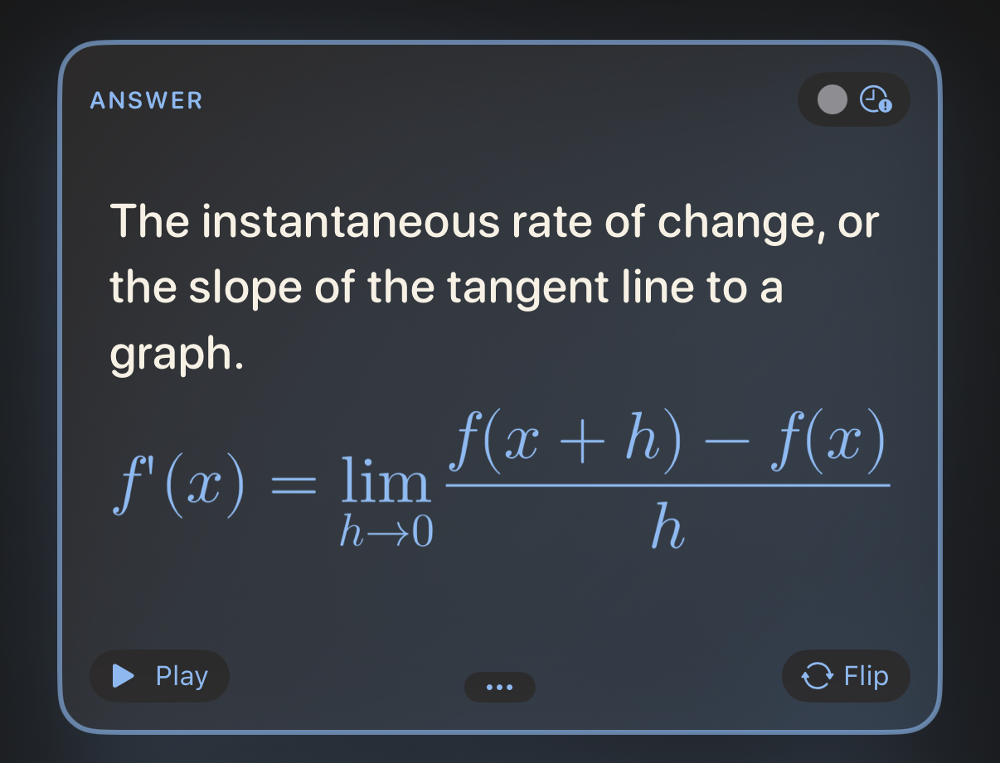
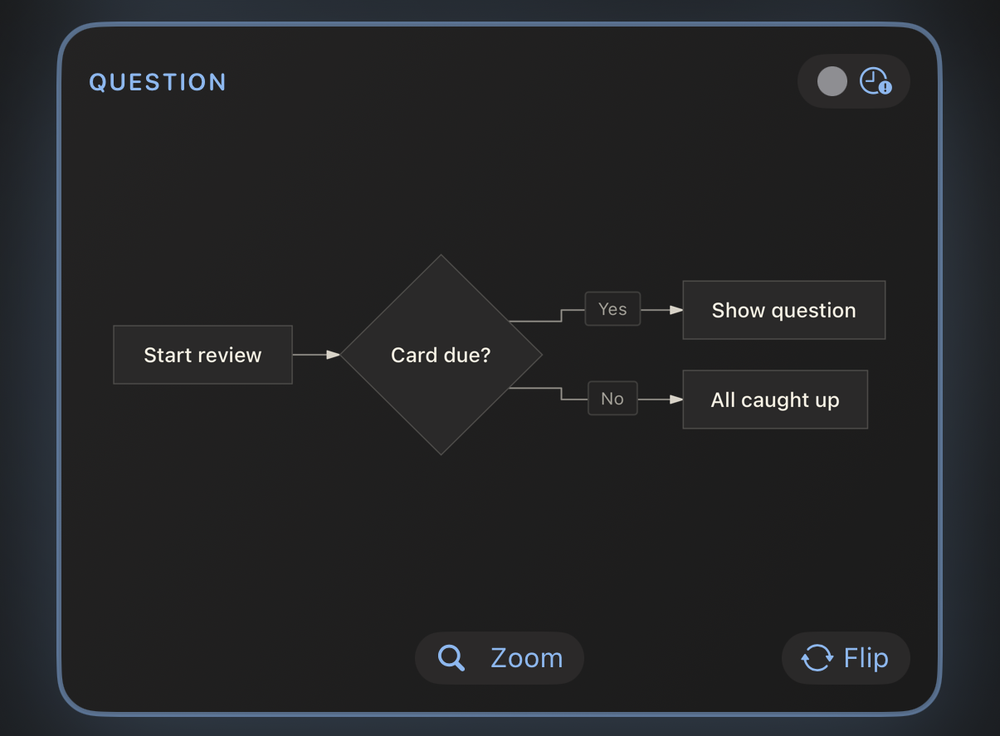

3.1 The card editor at a glance

Every card has two sides, Question and Answer, and each side is edited on its own. A side has three tabs:
- Text — what you type, with the formatting toolbar above it.
- Image — one picture from Photos (or pasted into the text).
- Audio — an audio file, such as
.mp3,.m4aor.wav.
Below the text field you will find Formatting help — a pocket version of this chapter, always one tap away — and the side’s Language.
A side can’t be empty: both the question and the answer need text, a picture or a sound before Save lights up. Which tab you save from matters, too — Chapter 4 explains how to combine text with a picture or a sound without losing either.
3.1.1 The toolbar
You never have to remember the markup. The toolbar above the text field inserts it for you, wrapped around whatever you have selected. It scrolls sideways; from left to right:
| Button | Inserts |
|---|---|
| Picture | the side’s image, at the cursor |
| B / I | **bold** / *italic* |
</> |
`inline code` |
| f(x) / Σ | $inline maths$ / a $$ maths block |
| Waveform | [shown]{spoken} — a spoken hint |
| Cloze | {{c1::…}} — a fill-in-the-blank |
| Link | [label](https://…) |
| Table | a two-column table |
| Diagram | a mermaid diagram block |
| Large text | a ::: hero block |
3.1.2 Language matters
The Language picker tells JustFlip! which voice should read that side aloud, and each side has its own — a Spanish word on the front, its English meaning on the back.
A new card starts with its language set to None, and a side with no language is simply not spoken — not by the speaker button, not by Speak Cards. If a card stays silent, check its language first.
3.1.3 Tags and flags
Tags are typed into a chip field: press Return, the
+ button or a comma to turn the text into a tag. Paste
verbs, irregular, A2 and you get three chips at once.
Letter case doesn’t matter and duplicates are dropped. A colour flag
makes a card stand out when you browse a deck.
3.2 Text that looks right
Card text is Markdown, simplified for small screens. Here is everything that shapes plain text:
Mitochondria are the **powerhouse**
of the *cell*. The function is
`atp_synthase()`.Mitochondria are the powerhouse of the
cell. The function is atp_synthase().
**bold**and*italic*— emphasis.`code`— a monospaced snippet.\*— a backslash shows the next character literally, so\*not italic\*keeps its stars.- A blank line starts a new paragraph; a single line break is kept as it is.
Cards are small, so a few Markdown habits don’t apply. A line
starting with # is shown as plain text — the hash marks are
dropped, there are no headings on a card. List markers such as
- or 1. appear exactly as you typed them,
which is usually what you want anyway.
3.2.1 Links
[the guide](https://example.com) shows the
guide as a tappable link. Web (https://), e-mail
(mailto:) and phone (tel:) links work; any
other kind of link is shown as plain text.
3.3 Fill in the blanks
A cloze card hides part of a sentence. The question shows a blank; flipping the card reveals the missing words, highlighted. It is the fastest way to turn a paragraph of notes into something you can be tested on.
The capital of France
is {{c1::Paris}}.The capital of France is […].
Add a hint after a second pair of colons. The hint appears inside the blank, and it is what the voice says instead of the word “blank”:
{{c1::Mitochondria::organelle}}
produce most of the cell's ATP.[organelle] produce most of the cell’s ATP.
When the card is flipped, the whole sentence comes back with the answers marked — Mitochondria produce most of the cell’s ATP. The Answer side of a cloze card is optional. Anything you write there is shown underneath the revealed sentence as extra notes.
Number your blanks c1, c2, c3…
— but in JustFlip! every blank on one card is hidden and revealed at
the same time, and the card is reviewed as a single item. Want to
be tested on each blank separately? Make one card per blank.
Anki users will know the other behaviour: there, each number becomes its own card. That is exactly what happens when you import an Anki cloze note — it is split into one card per number, so nothing you studied in Anki is lost.
A few details that save head-scratching:
- Only well-formed blanks count.
{{c0::x}},{{c1::}}or{{not a cloze}}are shown literally, braces and all. - Need the braces themselves? Write
\{\{c1::…}}. - Inside code and maths,
{{c1::…}}is left alone — it stays literal.
3.4 Big and centred
Some cards are a single character: a kana, a kanji, a chemical symbol, a chord name. Put it inside a hero block and it fills the card:
::: hero
あ
:::あ
::: center does the same without the size change — the
content is simply centred. Open the block with ::: hero or
::: center on its own line and close it with
:::.
Keep any notes outside the block, so they stay regular text, and skip bold or italic inside a hero block. At that size they only add noise.
3.5 Maths
JustFlip! typesets maths with TeX syntax, the notation used by
mathematicians everywhere. Wrap a formula in single dollars to keep it
in the line, or put it between $$ lines to give it its own
centred row:
The derivative:
$$
f'(x) = \lim_{h\to 0}\frac{f(x+h)-f(x)}{h}
$$The derivative:

Inline maths works the same way: $E = mc^2$ becomes
right inside the sentence. How to make a formula sound right
when it is read aloud comes in Tell the voice what to
say.
3.6 Code
Fence code with three backticks and name the language after the opening fence. JustFlip! colours keywords, strings, comments, numbers and types:
```swift
let answer = 6 * 7
// prints 42
print(answer)
```let answer = 6 * 7
// prints 42
print(answer)Recognised language names: Swift, Python, JavaScript, TypeScript, Java, Kotlin, C, C++, C#, Objective-C, Go, Rust, Ruby, PHP, SQL, Bash, Smalltalk/Pharo, JSON and YAML. An unknown or missing name still gives you a clean monospaced block — just without colours. Text inside a code block is shown exactly as written; no markup is applied there.
3.7 Diagrams
A code block named mermaid isn’t shown as code at all —
JustFlip! draws it. Flowcharts, sequence, state, class and
entity-relationship diagrams are all supported.
```mermaid
graph TD
A[Start review] --> B{Card due?}
B -->|Yes| C[Show question]
B -->|No| D[All caught up]
```
Aim for about eight boxes with short labels. Start with
graph TD (top-down); JustFlip! may turn a flowchart on its
side when that fits the card better. For the details, the
Zoom button opens the diagram full screen.
3.8 Tables
Small comparisons read best as a table. Leave a blank line above it; the first row is the header and is shown in bold:
| Tense | Form |
|---|---|
| Present | I go |
| Past | I went |
| Perfect | I have gone || Tense | Form |
|---|---|
| Present | I go |
| Past | I went |
| Perfect | I have gone |
Cells accept the same formatting as the rest of the card — bold,
code, maths. To show a | inside a cell, write
\|.
A card table holds at most 2 columns and 5 rows,
header included. Anything beyond that is left out and marked with an
ellipsis. Alignment colons such as |:---|---:| are
accepted, but columns are always left-aligned. A bigger table is usually
a sign that the card wants to be several cards.
3.9 Pictures
Each side of a card holds one picture. Add it on the Image tab, or with the picture button in the text toolbar, which also inserts a marker into the text:
Which bird is this?
![attachment:0]The marker, ![attachment:0], decides where the
picture sits among the text. A marker with no picture behind it simply
shows nothing.
The picture has a description field, too. VoiceOver reads it to people who can’t see the image, so it is worth a few words.
A card draws your picture exactly as it is, with no background behind it. Black lines on a transparent background look perfect on a light card and disappear completely on a dark one. Give diagrams, notation and line art a solid white background before you add them.
Use photos and bitmaps (PNG, JPEG). SVG files aren’t supported. There is no need to shrink big photos first: JustFlip! scales a picture down to 3,000 pixels on its long side when you save, which keeps iCloud sync quick on all your devices. Chapter 4 has more on pictures that work well.
3.10 Tell the voice what to say
JustFlip! can read any card aloud, with the voice for that side’s language. Usually it gets things right. When it doesn’t — an acronym, a symbol, a formula — you can give it a spoken hint: curly braces right after something tell the voice to say this instead.
Enable [iOS]{eye oh ess}
background refresh.Enable iOS background refresh.
The voice says “Enable eye oh ess background refresh.”
The card still shows iOS; the voice says “eye oh ess”. The same rule works in exactly four places:
| Where | You write |
|---|---|
| Any text, in brackets | [C♯ minor]{C sharp minor} |
| Inline maths | $c^2${c squared} |
A maths block — after the closing $$ |
$${V equals S p v} |
| A picture | ![attachment:0]{a red apple} |
Without a hint, text is read normally, maths is read out from its source, and pictures are silent.
A hint only works in those four places. After bold, italic or bare text, the braces are shown on the card:
*F♯ major*{F sharp major}→ the card shows F♯ major{F sharp major}*[F♯ major]{F sharp major}*→ the card shows F♯ major and the voice says “F sharp major”
When in doubt, use brackets. Put any styling outside them.
Hints are for musical sharps and flats, formulas, abbreviations and romanised syllables — things text-to-speech stumbles over. There is no need to repeat what is already written. And for better voices overall, download an Enhanced or Premium voice in the system settings, under Accessibility › Read & Speak › Voices, then pick it in JustFlip! under Settings › Speech › Voices.
3.11 When a card is too long
JustFlip! first tries to fit everything on the card. If the text doesn’t fit, it shrinks slightly, down to 80 % of the normal size. If it still doesn’t fit, the text is cut at the last whole line and the bottom of the card fades out.
Nothing is lost, though. The ••• button at the bottom of a card opens the full content of that side in a sheet. On a card whose diagram or picture fits, the same spot holds Zoom instead, which opens the picture full screen.
That is a safety net, not a writing style. A card you can’t read at a glance is usually two or three cards pretending to be one.
3.12 Cards your memory will keep
Formatting makes a card pleasant. These habits make it work:
- One fact per card. “What are the three branches of government?” is one card that fails half the time. Three cards, one per branch, each succeed on their own.
- Ask precisely. A question that could have two right answers will teach you neither. Add context — or a cloze hint — until only one answer fits.
- Use your own words. Rephrasing something is the first repetition, and it is free.
- Add a picture or a sound whenever the thing is visual or audible: a bird, a chord, a pronunciation.
- Keep question texts unique within a deck.
When you import a deck file (Chapter 5), a card whose question text matches a card already in that deck updates that card instead of adding a new one. That makes re-importing a deck safe. But it also means two cards with the very same question text — “Name this note.”, say — become one card. Put a shared prompt in the deck name instead, or leave the question text empty on picture-only cards.
3.13 Cheat sheet
| You write | You get |
|---|---|
**bold** · *italic* |
bold · italic |
`code` |
monospaced snippet |
\* |
a literal * |
[label](https://…) |
a link (https, mailto,
tel) |
{{c1::answer}} |
a blank, revealed on the flip |
{{c1::answer::hint}} |
a blank that shows a hint |
::: hero … ::: |
very large, centred content |
::: center … ::: |
centred content |
$x^2$ |
inline maths |
$$ … $$ |
a centred maths block |
```swift … ``` |
highlighted code |
```mermaid … ``` |
a diagram |
| A | B | + |---|---| |
a table, max 2 × 5 |
![attachment:0] |
the side’s picture, here |
[shown]{spoken} |
say something else aloud |
$x^2${x squared} |
a spoken formula |
![attachment:0]{a red apple} |
a spoken picture |